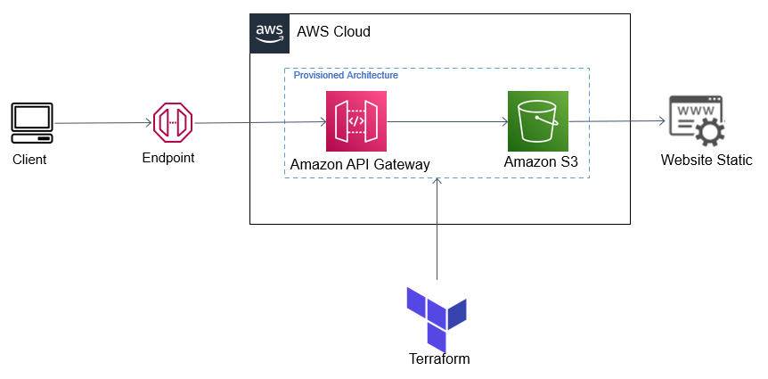

API Gateway Proxy
Introdução
Caso seu objetivo seja boas práticas na hospedagem de um site estático, na qual você quer utilizar o endpoint fornecido da API Gateway (utilizando ela como proxy), esse é o tutorial adequado para você. Vamos utilizar os recursos do terraform para montar nossa infraestrutura.
Observe Abaixo a Arquitetura:

Metodologia
- Em primeiro momento, se ainda não clonou, no seu diretório clone o repositório e entre na raiz do repositório. Se clonou, siga para a etapa 2:
git clone https://github.com/RicardoMourao-py/CloudDefend.git
- Entre na branch
api com o comando abaixo:
- Na pasta raíz, exporte as credenciais da sua conta da AWS no terminal:
export AWS_ACCESS_KEY_ID=<ID_CHAVE_DE_ACESSO>
export AWS_SECRET_ACCESS_KEY=<CHAVE_SECRETA_DE_ACESSO>
- Modifique o
index.html e o error.html de acordo com o site estático que deseja gerar para o usuário.
- Inicie o ambiente Terraform, carregando as dependências necessárias:
- Aplique e solicite ao terraform que provisione os recursos solicitados na nuvem:
- Por fim, visualize se foi criado corretamente a infraestrutura no console da AWS.
Imagens de Verificação

Tela de Início da API


Tela com o Fluxo do Método na Raiz


Tela com o Fluxo do Método do Recurso


Tela Stage do MyS3 com o seu Endpoint


Tela de Política do Bucket integrada a API

Warning
Observe que caso queira acessar o site pelo endpoint fornecido no S3 não é mais possível, e sim apenas pelo endpoint da API.
Código
O código por completo se encontra no arquivo main.tf. As etapas abaixo explicam o passo a passo para cada recurso criado pelo terraform. Vale ressaltar, esta etapa segue este tutorial da aws
Em primeiro momento, é criado o provider da infraestrutura do nosso projeto, responsável por especificar a região onde vamos trabalhar:
| main.tf |
|---|
| # Provide AWS Credentials
provider "aws" {
region = "us-east-1"
}
|
Logo em seguida, há a configuração das políticas necessárias para execução do projeto. É criado uma função do IAM contendo uma política de confiança para que a API Gateway assuma a função. É criado uma política do AWS Identity and Access Management (IAM) com permissão para a API GetObject para o bucket do Amazon S3. É anexado a política de acesso criada anteriormente na role da API Gateway. É criada uma política do bucket para permitir que o proxy da API acesse apenas o bucket do Amazon S3:
| main.tf |
|---|
| # Cria função da integração com a política necessária
resource "aws_iam_role" "s3_api_gateyway_role" {
name = "s3-api-gateyway-role"
assume_role_policy = <<EOF
{
"Version": "2012-10-17",
"Statement": [
{
"Sid": "",
"Effect": "Allow",
"Principal": {
"Service": "apigateway.amazonaws.com"
},
"Action": "sts:AssumeRole"
}
]
}
EOF
}
# Anexar política de acesso S3 à função de gateway de API
resource "aws_iam_role_policy_attachment" "s3_policy_attach" {
role = "${aws_iam_role.s3_api_gateyway_role.name}"
policy_arn = "${aws_iam_policy.s3_policy.arn}"
}
# Create S3 Full Access Policy
resource "aws_iam_policy" "s3_policy" {
name = "s3-policy"
description = "Policy for allowing all S3 Actions"
policy = <<EOF
{
"Version": "2012-10-17",
"Statement": [
{
"Effect": "Allow",
"Action": "s3:*",
"Resource": "*"
}
]
}
EOF
}
# Cria a política do bucket
resource "aws_s3_bucket_policy" "bucket_policy" {
bucket = aws_s3_bucket.site_bucket.id
policy = data.aws_iam_policy_document.allow_access_from_another_account.json
}
# cria um IAM para ser referenciado na política do bucket
data "aws_iam_policy_document" "allow_access_from_another_account" {
version = "2012-10-17"
statement {
sid = "APIProxyBucketPolicy"
actions = ["s3:GetObject"]
effect = "Allow"
principals {
type = "Service"
identifiers = ["apigateway.amazonaws.com"]
}
resources = ["arn:aws:s3:::check-request-2/*"]
condition {
test = "ArnLike"
variable = "aws:SourceArn"
values = ["arn:aws:execute-api:us-east-1:108791993403:${aws_api_gateway_rest_api.MyS3.id}/*/GET/"]
}
}
}
|
Nesta etapa é criado o bucket S3 com todas as configurações necessárias para a hospedagem do site estático com segurança. É criado um bucket S3, com nome check-request-2. Além disso, é habilitado o versionamento o seu versionamento. Por fim, é adicionado e configurado os arquivos index.html e error.html no bucket. Ademais, nesse trecho de código, é configurado os arquivos de índice e de erro. Em seguida, é configurado o acesso público do bucket:
| main.tf |
|---|
| resource "aws_s3_bucket" "site_bucket" {
bucket = "check-request-2"
}
resource "aws_s3_bucket_versioning" "versioning_S3" {
bucket = aws_s3_bucket.site_bucket.id
versioning_configuration {
status = "Enabled"
}
}
resource "aws_s3_object" "index" {
bucket = aws_s3_bucket.site_bucket.id
key = "index.html"
source = "index.html"
content_type = "text/html"
}
resource "aws_s3_object" "error" {
bucket = aws_s3_bucket.site_bucket.id
key = "error.html"
source = "error.html"
content_type = "text/html"
}
resource "aws_s3_bucket_website_configuration" "site_bucket" {
bucket = aws_s3_bucket.site_bucket.id
index_document {
suffix = "index.html"
}
error_document {
key = "error.html"
}
}
resource "aws_s3_bucket_public_access_block" "meu_bucket" {
bucket = aws_s3_bucket.site_bucket.id
block_public_acls = false
block_public_policy = false
ignore_public_acls = false
restrict_public_buckets = false
}
|
Nesta etapa é criada a API Gateway com todas as configurações necessárias para funcionar como proxy. Sendo assim, o client só conseguirá acessar o site com o endpoint da API. Em primeiro momento, é criado a API Gateway com seu respectivo nome. Logo em seguida, é criado um método GET na raiz da API e a sua integração usa como propriedades HTTP_METHOD do tipo GET, tipo AWS Service, conexão com o buclet S3 no arquivo index.html. Além disso, a configuração é finalizada com o arn da role criada na etapa de políticas. É criado o recurso {object} e um método GET dentro do recurso. Ademais, a sua integração segue os mesmos princípios que a etapa anterior, com a única exceção que esse método tem no integration request, a configuração do URL path Parameters. É configurado o Method Response do GET raiz e o GET do object, além de habilitar method.response.header.Content-Type para a próxima etapa. Ademais, é configurado o integration response com os parâmetros necessários para adicionar um valor em Content-Type, criado na etapa anterior, no integration response. Por fim, é feito deploy da aplicação com o nome do estágio MyS3:
| main.tf |
|---|
| # Cria API REST
resource "aws_api_gateway_rest_api" "MyS3" {
name = "MyS3"
description = "API for S3 Integration"
}
# Cria o método na raiz
resource "aws_api_gateway_method" "GetBuckets1" {
rest_api_id = "${aws_api_gateway_rest_api.MyS3.id}"
resource_id = "${aws_api_gateway_rest_api.MyS3.root_resource_id}"
http_method = "GET"
authorization = "NONE"
}
# Etapa para a integração do S3 no GET raiz
resource "aws_api_gateway_integration" "S3Integration1" {
depends_on = [aws_api_gateway_method.GetBuckets1]
rest_api_id = "${aws_api_gateway_rest_api.MyS3.id}"
resource_id = "${aws_api_gateway_rest_api.MyS3.root_resource_id}"
http_method = "${aws_api_gateway_method.GetBuckets1.http_method}"
integration_http_method = "GET"
type = "AWS"
uri = "arn:aws:apigateway:us-east-1:s3:path/check-request-2/index.html"
credentials = "${aws_iam_role.s3_api_gateyway_role.arn}"
}
# Criando recurso
resource "aws_api_gateway_resource" "Object" {
rest_api_id = "${aws_api_gateway_rest_api.MyS3.id}"
parent_id = "${aws_api_gateway_rest_api.MyS3.root_resource_id}"
path_part = "{object}"
}
# Cria o método no recurso
resource "aws_api_gateway_method" "GetBuckets2" {
rest_api_id = "${aws_api_gateway_rest_api.MyS3.id}"
resource_id = "${aws_api_gateway_resource.Object.id}"
http_method = "GET"
authorization = "NONE"
request_parameters = {
"method.request.path.object" = true
}
}
# Etapa para a integração do S3 no GET do object
resource "aws_api_gateway_integration" "S3Integration2" {
rest_api_id = "${aws_api_gateway_rest_api.MyS3.id}"
resource_id = "${aws_api_gateway_resource.Object.id}"
http_method = "${aws_api_gateway_method.GetBuckets2.http_method}"
integration_http_method = "GET"
type = "AWS"
uri = "arn:aws:apigateway:us-east-1:s3:path/check-request-2/{object}"
credentials = "${aws_iam_role.s3_api_gateyway_role.arn}"
request_parameters = {
"integration.request.path.object" = "method.request.path.object"
}
}
resource "aws_api_gateway_integration_response" "MyS3IntegrationResponse" {
depends_on = [aws_api_gateway_integration.S3Integration1]
rest_api_id = "${aws_api_gateway_rest_api.MyS3.id}"
resource_id = "${aws_api_gateway_rest_api.MyS3.root_resource_id}"
http_method = "${aws_api_gateway_method.GetBuckets1.http_method}"
status_code = "200"
response_parameters = {
"method.response.header.Content-Type" = "integration.response.header.Content-Type"
}
}
resource "aws_api_gateway_integration_response" "MyS3IntegrationResponse_object" {
depends_on = [aws_api_gateway_integration.S3Integration2]
rest_api_id = "${aws_api_gateway_rest_api.MyS3.id}"
resource_id = "${aws_api_gateway_resource.Object.id}"
http_method = "${aws_api_gateway_method.GetBuckets2.http_method}"
status_code = "200"
response_parameters = {
"method.response.header.Content-Type" = "integration.response.header.Content-Type"
}
}
resource "aws_api_gateway_method_response" "response_200" {
rest_api_id = aws_api_gateway_rest_api.MyS3.id
resource_id = aws_api_gateway_rest_api.MyS3.root_resource_id
http_method = aws_api_gateway_method.GetBuckets1.http_method
status_code = "200"
response_parameters = {
"method.response.header.Content-Type" = true
}
}
resource "aws_api_gateway_method_response" "response_200_object" {
rest_api_id = aws_api_gateway_rest_api.MyS3.id
resource_id = aws_api_gateway_resource.Object.id
http_method = aws_api_gateway_method.GetBuckets2.http_method
status_code = "200"
response_parameters = {
"method.response.header.Content-Type" = true
}
}
resource "aws_api_gateway_deployment" "S3APIDeployment" {
depends_on = [aws_api_gateway_method.GetBuckets1,
aws_api_gateway_method.GetBuckets2, aws_api_gateway_method_response.response_200_object,
aws_api_gateway_method_response.response_200, aws_api_gateway_integration_response.MyS3IntegrationResponse_object,
aws_api_gateway_integration_response.MyS3IntegrationResponse, aws_api_gateway_integration.S3Integration1,
aws_api_gateway_integration.S3Integration2, aws_api_gateway_resource.Object
]
rest_api_id = "${aws_api_gateway_rest_api.MyS3.id}"
}
resource "aws_api_gateway_stage" "MyS3stage" {
depends_on = [aws_api_gateway_method.GetBuckets1, aws_api_gateway_deployment.S3APIDeployment,
aws_api_gateway_method.GetBuckets2, aws_api_gateway_method_response.response_200_object,
aws_api_gateway_method_response.response_200, aws_api_gateway_integration_response.MyS3IntegrationResponse_object,
aws_api_gateway_integration_response.MyS3IntegrationResponse, aws_api_gateway_integration.S3Integration1,
aws_api_gateway_integration.S3Integration2, aws_api_gateway_resource.Object
]
stage_name = "MyS3"
rest_api_id = aws_api_gateway_rest_api.MyS3.id
deployment_id = aws_api_gateway_deployment.S3APIDeployment.id
}
|